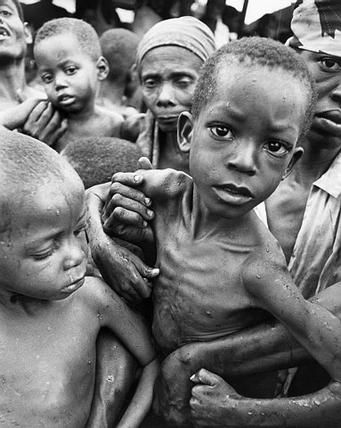
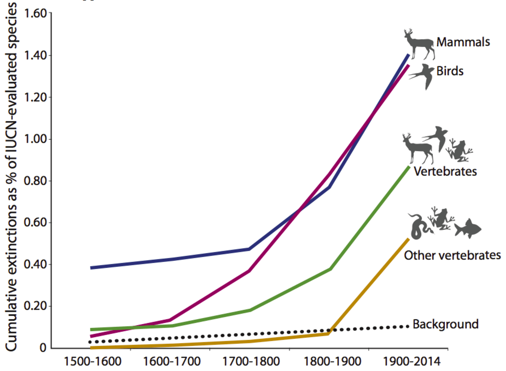

Pollution and Over-Population, the Modern Evils
Over-population, pollution, global warming, ecology. We hear those often but was is really going on? What is actually over-population or pollution? Should we be concerned? My answer: definitely Yes! And here is why.
Introduction
In this article, I will use a very engineer-like approach best summarized with the following pseudo-code:
situation = get_situation_under_consideration()
optimization_criteria = situation.get_most_important_criteria()
if optimization_criteria.is_maximized():
pass
else:
problem = situation.discover_underlying_problem()
return problem.find_solution()
In this article, we will consider Earth’s present day situation.
Optimization Criteria
Let’s first make an egoistic assumption here and say that we want humanity to survive on the long term1. This will be our first criterion.
Criterion 1: Humanity should survive on the long term
Survival is probably not enough on its own, we want something more in our life, at least I do. So I will define my second criterion the following way:
Criterion 2: Humans should have enjoyable lives
I will not give a proper definition of what “enjoyable” is, because I am not sure it is possible to find a definition everzone accepts. For now I will just assume we have a common understanding of what an unenjoyable life is, which is enough to determine if life enjoyability is maximized.
Awesome, so here are my optimization criteria:
- Human survival
- Life enjoyability
Time For Observation
Now that I have fixed what I want to optimize, let’s look at the current situation and determine if we should change anything to the way we do things.
You probably guessed it, in my opinion, life enjoyability is not maximized at all on Earth and human survival could become a real question in the short term.
Poverty and hunger in Africa

Pollution and health issues in China
Over-population in India
There exist many other examples across the globe.
Understanding the Problem
So what went wrong? Well, before going any further in this reflection, let’s try have a deeper understanding of some of our optimization criteria.
What Human Survival is Made Of
Our survival depends maily on us being able to stay alive. To stay alive, we need enough energy to function and a good health, as simple as that.
Core Components of an Enjoyable Life
How could we define an “enjoyable life” so that anyone would agree with the definition? Finding good definition is a really complicated problem and I won’t pretend I have one for what an “enjoyable life” is. On the other hand I think it is possible to identify a few components that could reasonably appear in all possible definitions.
Alright so a first component I find reasonable is health. Staying healthy is often a very important part of having an enjoyable life.
Second, I think that all humans want some kind of comfort. Comfort might be very primitive like having enough to eat and a roof above one’s head, but we all want some. It seems quite clear from the previous example that comfort strongly depends on resources.
Lastly, I think that all humans want to have the chance of doing cool experiences, I’ll talk about opportunities. And those do, one way or another, also depend on resources. Let’s consider a few examples. Assume you have the opportunity to visit a foreign country. You will need resources to travel there (fuel if you take car or plane, food if you go by foot or bike, etc). You will also want to have some accommodation there (heat, light, food, shelter built using raw materials) which requires resources and opportunities to visit and discover which, themselves, will also require some form of resources. Basically, every actions we perform require resources (whether it is simply the energy needed to move our muscle that we gain from eating food or resources we use to create and power machine that perform actions for us). And the more resources we have at our disposal, the more things we can do, so the more opportunities we can have.
So we were able to pinpoint a very interesting common denominator: resources (for which I do have a definition this time).
Resource: Energy stored under a precise form that human kind can use. Example: food, fossil fuel, wind.
Thus the life enjoyability metrics in our modern society becomes very dependent on resources.
Resources
Humankind requires many different kind of resources: food, wood, electricity, heat, light, etc.
Resources available to us on Earth are limited though. A reasonable model for human accessible resources is given hereafter. Earth’s only source of energy is the Sun. As we can directly exploit Sun’s energy (solar panels, solar heat plants, etc) I will consider it a resource in itself. However, let’s note that we are not capable of transforming the Sun’s energy into all the types of resources we need (e.g. there are no human machine that can produce wood or food out of the Sun’s radiations). But the Sun’s energy can be transformed by non-human entities living on Earth like plants and those provide us with the resources that we are not capable of creating ourselves. Finally Earth also has a certain amount of stored resources like fossil fuels, already existing plants, radioactive matter, etc.
A few key takeaway points here:
- The total quantity of energy Earth receives per time unit is finite and defined by the Sun.
- We are unable to produce some of the forms of resources we need. This point is very important: it highlights the fact that we are very much dependent on the environment to provide us with the resources we need.
- Resources stored on Earth are finite, hence using more resources than the produced ones per time unit cannot be done for long: at some point we will simply run out of them.
Let’s formalize this:
Where:
- \(r(t)\) is the total human available resources at a given point of time. Unit: \([ressource]\)
- \(egr(t)\) are the environment generated resources at a given point of time. Units: \([ressource]\)
- \(hgr(t)\) are the human generated resources directly from the sun energy which nowadays is a very very small proportion of the total resources we consume. Units: \([ressource]\)
- \(reserves(t)\) are Earth’s stored resources at a given point of time. Units: \([ressource]\)
Now that we know what our optimization criteria actually rely on, let’s discover why they are not maximized.
An index I find really interesting about resource consumption, to have an idea is the planet equivalent. It basically boils down to “How many planets would we need to have all humans living like <nationality>?”. For example, if we all wanted to have an american lifestyle, we would require the resources produced by five planet Earth! On the other hand, if we all lived like Indians, we would only require 0.6 planet (Foot Print Network).
It is estimated that the present day human population consumes 1.7 Earths… We probably won’t be able to do it for long.
Two Major Problems: Over Population and Pollution
In the media we often hear about pollution, and over-population. We all have some understanding of those terms but what are we talking about exactly, and are they really so bad?
There is an intrinsic human perspective in the terms “over-population” and “pollution”. The Earth does not care about over-population or pollution, whatever that is. It was here long before us and will continue to do so long after we disappear.
One could argue that pollution and global warming are also animal and vegetal problem. I would absolutely agree, but when humans talk about pollution or over-population, they generally refers to the troubles it could cause them, not the troubles it causes other species. So let’s assume this perspective too.
Cool, so now, let’s try to define those terms and prove that they are key components of the problems we acknowldged above.
Over Population (and Lifestyle)
Over-population:
Overpopulation occurs when a species’ population exceeds the carrying capacity of its ecological niche.
I will define a few variables here:
- \(lifestyle\), that represent the average lifestyle of a population.
- \(pop\), the total total number of humans on Earth (\(pop\) for population). Units: \([individual]\)
- \(cri(lifestyle)\), the average consumed resources per individual per unit of time for a given lifestyle. Unit: \([ressource/(individual \cdot time)]\)
So over population is the state were:
This situation diminishes Earth’s stored resources \(ressources(t)\). And at some given point in time \(ressources(t_1) = 0\). Then we won’t have enough ressources available for our entire population to maintain its lifestyle. This generally results in lifestyle pejoration which lowers life enjoyability. Actually, this lifestyle pejoration can be bad enough so that at some point it event threaten the very survival of the individuals (famine are an example of such a situation). This now also impacts negatively our first criterion: human kind survival.
Hence using more resources than what the environment provides is a bad idea that will eventually catch up with us.
Mathematically one can summarize the maximal amount of ressources an individual should consume the following way:
Where:
- \(mri\) is the maximum resource quantity an individual should consume in average. Unit: \([resource/individual]\)
If \(mri(t) \lt cri(lifestyle)\), then the life enjoyability index is diminished because we simply cannot sustain having the wanted lifestyle as the maximum available resources per individual in less than the resources that would be needed for the given lifestyle. We remark that when the population becomes big, the \(mri\) get smaller. If the population get very big, then, at some point, \(mri\) will become less than \(cri\) and the above described situation will occur.
This a reason why over-population is a problem.
Pollution
Pollution: Adding substances or energy of some form (nose, light, etc) so fast into the environment that it causes changes that are harmful to human kind.
In my opinion, pollution is problematic for the following reasons:
- It impacts human health directly which has a negative impact on the optimization of human survival and life enjoyability.
- It indirectly diminishes human resources (e.g. ocean pollution causing fishes to die, massive bees extinction have had disastrous consequences on harvests), and thus lowers our life enjoyability.
Let’s again try to formalize this idea.
- \(pollution\) represents the total quantity of substances and energy released by human kind in the environment. Units: \([pollution]\)
- \(pi\) is the average pollution per individual. Units: \([pollution/individual]\)
Let’s make a few remarks here. As the definition tells us, pollution is problematic only above a certain threshold. So problems only arise when \(pollution(t) > epac\) where \(epac\) is the environment pollution absorbance capacity.
Do we generate more pollution than what the environment can absorb? If you ask me, it simply makes no doubt. To prove this claim, I will refer to the definition: are we polluting the environment enough that it causes troubles to us? Consider global warming and all the issues related to it (ocean rise, extrem climatical events, desertification, etc). You have your answer.
Solutions
Thanks to the formulas above we can easily find a lot of solutions. But first, let’s define a few things we want to keep constant or even increase. In my opinion, \(lifestyle\) should not be decreased, on the contrary, it should increase.
So what can we do?
We could reduce the pollution generated per individual. It is often considered a part of ecology: have the same lifestyle but reduce the generated pollution by it (recycling, less wrapping, local products, etc). We do it to some extend, but I believe we could do much more. Technology and innovation have big role to play here. This solution can help lower pollution and hence improves life enjoyability and human survival.
We could also improve resource efficiency which, in essence, means consuming less resources, while maintaining the same lifestyle. This is also often considered a part of ecology. Again technology and innovation have a big role to play here. This solution can help lower ressource consumption and hence improves life enjoyability.
But the two above given solutions can only have limited impact because there are fundamental limits to what can be done. Most action have a physical minimum amount of energy needed (transport can be made more efficient by reducing waste and friction for example but Newton’s law \(F = m \cdot a\) sets the minimum required enegry).
The solution I think has the biggest long term potential impact is human population reduction. This would reduce the total pollution generated and increase the total ressources available per individuals, thus improving life enjoyability and not changing human kind survival (I mean with 500 millions individuals, our chances of survival are as high as if we are 9 billions in my opinion).
Note that I do not pretend to propose solutions to diminish the human population on Earth. This is yet another complex problem and finding ethical solutions to it is actually quite complicated. I just say that if we could limit the human population, it would solve a lot of problems.
Imagine Another World
To conclude this article, imagine what a world with only 500 millions human being (which is roughly equivalent to the american population) would look like.
Here is how I envisage the situation. All humans would have decided to live on a single continent. The one that suffers the less from extreme climatical events like tornados, earthquakes or tsunamis. 500 millions probably represent enough human beings to maintain our lifestyle. It would simplify politics a lot as we could form only one country. Individuals could also pollute more while without causing much damage to the environment (you could take the plane without having problems of conscience for example).
Moreover it would allow many places on Earth to be exempt from human traces and authentique human-exempt areas could exists (which is an idea I find facinating).
Further Ideas
An Argument for Biodiversity and Environmental Protection (To Some Extent)
I said earlier that some forms of resources on Earth are only generated by plants. Actually human kind mostly relies on its environment to provide it with the resources it needs.
Interestingly enough, the machine producing the various resources we need, plants and animals, also happen to be the resources. It gets even crazier when we remark that the quantity of plants at \(t+1\) actually also depends on the plant quantity at \(t\) (this comes from the fact that plants reproduce, i.e. plants are their own factory, they are not produce by an external source). In short, plants and animals are self-generating, resource-producent and resource themselves.
Cool, let’s now assume that we want to maximize the total resource quantity made available to us by the environment over time. The question is how many plants (I will talk about plants only but this can be generalized to animals) can we harvest and transform into resources now and how many plants should we leave alone so that they serve plant generation.
The total harvested ressources are given with the following formula:
Where \(harvest(t)\) is the amount of plants harvested at time \(t\). But we need to understand how plants evolve with time to understand what the possible values of \(harvest\) are. For example if \(harvest(t_1) = plants(t_1)\), then all subsequent harvests will be zero (because you used all plants and left no one to perpetuate the plant stock). This probably means that we won’t maximize the total harvest.
A simple model is the following:
Where:
- \(plants(t)\) represent the quantity of entities that produce resources for us in some form at a given point of time.
- \(\lambda\) is the reproduction rate.
NB: Such models do have complicated mathematical solutions. The model presented here is also very simple and does not take in account many complicated aspects (like the fact that some resources get stale with time).
The main point is that if one harvests more than what the environment can compensate for, then, over time, the available quantity of plants gets lower and lower until you reach zero which is clearly not a good solution. I believe that we are currently doing exactly that: harvesting more resources than what the environment can compensate for. And this will most likely create very important troubles in a not so distant future, hence the need to stop over exploiting the environment.
Now some bits about biodiversity. Recent years, most probably because of pollution, we have witnessed one of the most massive species extinction rate in Earth history.

Fine, what’s the matter? Well the problem is that a loss of biodiversity implies a loss of genetical diversity. And this genetical diversity ensures the environment is ready to face changes, which guarantees to us humans that the environment will never stop providing us with resources. In my opinion, it is therefore very important to preserve biodiversity.
An Argument for Equitable Resource Sharing Among Humans
We said we wanted to maximize life enjoyability and saw that it depended on resources. In this article, I implicitely considered that resources were shared equitably. Of course this is not the case and having a better distribution of resources across individuals wuld probably be a very good idea for the following reasons:
- A person with no resources probably has a very unenjoyable life
- Studies have shown that above a certain limit, having more resources does not make one happier
Changing resources distribution however is highly untrivial and will probably require a change of system. I will try to write an article about this in the future.
Hence you always try to find very easily acceptable axioms because if everyone agrees on the axioms you chose and if you proof is logically correct, then everyone should agree with your conclusion. Unfortunetaly it is highly non-trivial to find such axioms, especially if you want your proof to remain true across different populations, continents, cultures and time epochs. In that regard I find the axiom “Humanity should survive” very interesting because survival is probably implemented in our genes to some extent. And therefore I believe it is very easy easy to accept that axiom.
-
In the world of philosophy and logic, there are always some very basic sentences that you consider true but that you cannot prove, they are called axioms. ↩
Subscribe to ASARPhiB
Get the latest posts delivered right to your inbox